“Um Pokémon solitário. Ele se disfarça de Pikachu para ter companhia, já que as pessoas evitam sua verdadeira forma.”Alola · 2016
Nº 0778
Fantasma
Fada
Mimikyu
Passou a noite inteira costurando um Pikachu que nunca viu de perto.
Vinte centímetros de pano velho sobre uma coisa que ninguém descreveu duas vezes. Ele não quer assustar você — quer ficar perto. O disfarce é a única forma que encontrou de conseguir isso.
Passe o cursor nele para fazer carinho e dê comida: a amizade sobe de 0 a 255, como no jogo. Cutucar também funciona — o disfarce aguenta exatamente um golpe. Insistir depois disso é por sua conta.
Disfarce
Intacto
Amizade · Desconfiado
0 / 255
Dar comida
Ele está esperando você fazer alguma coisa.
Entradas de Pokédex
O que os registros dizem
e o que eles evitam dizer
Seis gerações de pesquisadores descreveram o mesmo pano. Nenhum descreveu o que há embaixo — com uma exceção, e ela terminou mal.
“Sua saúde piora sob a luz do sol. Por isso ele veste um pano velho no formato de um Pikachu e evita a claridade.”Alola · 2016
“Um estudioso escreveu um livro sobre o que viu ao levantar o pano de um Mimikyu. Morreu de choque logo depois de terminá-lo.”Alola · 2017
“O disfarce de Pikachu é a tentativa dele de fazer amigos. Mimikyu passou a noite inteira costurando.”Galar · 2019
“A exposição à luz do sol o deixa gravemente doente. O pano que o cobre é indispensável para sua sobrevivência.”Galar · 2019
“Ele vive em cantos escuros. Quem tenta espiar embaixo do pano é atacado sem aviso.”Paldea · 2022
Anatomia do disfarce
Seis peças de um Pikachu feito de memória
01
Orelhas
Dois triângulos recortados do mesmo pano e escorados por dentro. A direita nunca fica de pé: pende para o lado em toda ilustração oficial.
02
Rosto desenhado
Olhos rabiscados em espiral e boca em ziguezague, feitos de memória. Mimikyu nunca chegou perto o suficiente de um Pikachu para conferir.
03
Bochechas
Dois borrões alaranjados no lugar aproximado. Não guardam eletricidade nenhuma — é só rabisco.
04
O pano
Peça funcional, não enfeite: bloqueia a luz do sol, que o deixa gravemente doente. Sem ele, Mimikyu adoece em horas.
05
Cauda de graveto
Um graveto grosso amarrado na ponta do pano, imitando o raio da cauda de Pikachu. É também com o que ele acerta você no Martelo de Madeira.
06
Barra rasgada
A barra do pano se mexe sozinha quando não há vento. O corpo verdadeiro fica ali embaixo, e ele é bem menor que o disfarce.
Ficha de campo
Números de um bicho de 0,7 kg
| Nº Nacional | 0778 |
|---|---|
| Nº Alola | 210 (Sol/Lua) |
| Categoria | Pokémon Disfarce |
| Tipos | Fantasma / Fada |
| Altura | 0,2 m |
| Peso | 0,7 kg |
| Habilidade | Disguise |
| Grupo Ovo | Amorfo |
| Taxa de captura | 45 |
| Exp. base | 167 |
| Formas | Disfarçada · Quebrada |
| Estreia | Geração VII · 2016 |
Estatísticas-base
PS
55
Ataque
90
Defesa
80
Ataque Esp.
50
Defesa Esp.
105
Velocidade
96
050100150
Total 476. A barra rosa marca o maior valor: Defesa Especial 105 — ele aguenta melhor o que não consegue ver chegando.
Sofre dobrado de
- Aço
- Fantasma
Quase não sente
- Inseto
Não atinge de jeito nenhum
- Normal
- Lutador
- Dragão
Habilidade · Disguise
O primeiro golpe acerta o pano
Qualquer ataque que causaria dano é absorvido inteiro pelo disfarce. Ele rasga, Mimikyu passa para a Forma Quebrada, e o dano recebido é zero.
A partir da 8ª geração, o rasgo custa 1/8 dos PS máximos. Vale uma vez por batalha; depois disso ele está exposto, e leva tudo.
Repertório
O que ele faz quando o pano já era
Um atacante físico rápido que troca o próprio corpo por dano. Metade do repertório é rancor; a outra metade é carinho aplicado com força excessiva.
Let's Snuggle Forever
Vamos Nos Aconchegar Para Sempre · Movimento-Z exclusivoEle abraça o oponente e desce uma sequência de socos, cabeçadas e mordidas sem largar. É o golpe mais afetuoso do jogo e um dos mais fortes.
FadaPoder 190Exige Mimikium Z
Shadow Sneak
Sombra FurtivaEstica a própria sombra e agarra por trás. Sai sempre primeiro, o que fecha batalhas que ele não deveria vencer.
FantasmaPoder 40Prioridade +1
Play Rough
Jogo BrutoBrinca com o oponente e brinca pesado. É o golpe principal dele — e a exigência para liberar o Movimento-Z.
FadaPoder 90Precisão 90%
Wood Hammer
Martelo de MadeiraJoga o corpo inteiro para dentro do golpe usando o graveto da própria cauda. Um terço do dano volta para ele.
PlantaPoder 120Recuo 33%
Shadow Claw
Garra SombriaUma garra feita de sombra sai de dentro do pano. Índice de acerto crítico elevado.
FantasmaPoder 70Crítico alto
Swords Dance
Dança das EspadasSobe o Ataque em dois níveis. Combinado com o disfarce, ele ganha o turno livre de que precisa para isso.
NormalStatusAtaque +2
Curse
MaldiçãoSendo do tipo Fantasma, ele crava um prego na própria sombra: perde metade dos PS para amaldiçoar o oponente até o fim.
FantasmaStatusCusto 50% PS
Destiny Bond
Elo do DestinoSe ele cair no turno seguinte, leva junto quem o derrubou. Um terço das listas de duplas carrega esse golpe.
FantasmaStatusPrioridade 0
Como construir o seu
Três builds que aproveitam
o turno de graça
Tudo em Mimikyu competitivo gira em torno da mesma coisa: Disguise garante um turno em que ele não toma dano. Cada build gasta esse turno de um jeito diferente — montando um sweep, subindo Trick Room, ou começando a cobrar juros.
Singles · Smogon SV (RU / OU)
Melhor build geral
Swords Dance
- Item
-
 Life Orb
Life Orb
 ou Red Card
ou Red Card
- Habilidade
- Disguise
- Nature
- Jolly +Vel · −At.Esp
- Tera
- Ghost
- IVs
- 31 em tudo
PS0
Atk252
Def0
SpA0
SpD4
Spe252
0126252
- Swords Dance
- Play Rough
- Shadow Claw ou Drain Punch
- Shadow Sneak
Por quê. Não existe Pokémon relevante com Mold Breaker no tier, então Disguise praticamente garante o turno livre para subir Swords Dance. Jolly com Velocidade máxima existe para passar na frente de Kleavor e Krookodile.
Tera Ghost deixa o Shadow Sneak em +2 forte o bastante para limpar time desgastado. Drain Punch entra no lugar de Shadow Claw contra Aço — Bisharp, Empoleon, Goodra de Hisui — e ainda devolve o recuo do Life Orb. Red Card troca dano por seguro contra quem sobe status: expulsa Suicune de Calm Mind e Bisharp de Swords Dance.
Colar no Pokémon Showdown
Mimikyu @ Life Orb Ability: Disguise Tera Type: Ghost EVs: 252 Atk / 4 SpD / 252 Spe Jolly Nature - Swords Dance - Play Rough - Shadow Claw - Shadow Sneak
Duplas · Gen 9 Doubles OU
Uso real do metagame
Trick Room
- Item
-
Life Orb 51,1%
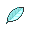
Mental Herb 24,4% - Habilidade
- Disguise 100%
- Nature
- Brave +Atk · −Vel
- Tera
- sem dado público neste formato
- IVs
- 31 em tudo, 0 em Velocidade
PS228
Atk252
Def28
SpA0
SpD0
Spe0
0126252
- Trick Room 78,1%
- Play Rough 79,6%
- Shadow Sneak 77,1%
- Destiny Bond 34,8%
Por quê. Em duplas, Mimikyu é um dos setters de Trick Room mais confiáveis que existem: Disguise absorve o golpe que tentaria impedi-lo, então o Trick Room sobe de qualquer jeito. Brave com IV 0 de Velocidade é intencional — dentro do Trick Room o mais lento age primeiro.
Mental Herb aparece em um quarto das listas justamente para escapar de Taunt no turno do setup. Se ele cair mesmo assim, Destiny Bond leva junto quem o derrubou.
Colar no Pokémon Showdown
Mimikyu @ Life Orb Ability: Disguise EVs: 228 HP / 252 Atk / 28 Def Brave Nature IVs: 0 Spe - Trick Room - Play Rough - Shadow Sneak - Destiny Bond
Battle Stadium Singles · nível 50
Anti-restrito
Do Not Touch!
- Item
-
 Rocky Helmet
Rocky Helmet
- Habilidade
- Disguise
- Nature
- Adamant +Atk · −At.Esp
- Tera
- Ghost ou Stellar
- IVs
- 31 em tudo
PS228
Atk252
Def20
SpA0
SpD4
Spe4
0126252
- Curse
- Play Rough
- Shadow Sneak
- Endure ou Protect / Thunder Wave
Por quê. Disguise + Rocky Helmet + Curse empilha dano passivo em cima de atacantes físicos gigantes como Koraidon e Zacian-C. Ele não precisa ganhar a troca — precisa que encostar nele custe caro.
Endure em vez de Protect segura turnos para a Curse trabalhar e obriga o oponente a completar o contato, levando Rocky Helmet. Também não é furado pelas formas de Urshifu, como Protect é.
Os 228 de PS não são arredondamento. Dão 159 PS no nível 50 — número ímpar de propósito, porque Curse cobra metade da vida máxima arredondando para baixo, e só com número ímpar sobra o bastante para usá-la duas vezes saindo de vida cheia. O resto do spread aguenta um Icicle Crash de Chien-Pao Adamant depois que o disfarce já quebrou.
Colar no Pokémon Showdown
Mimikyu @ Rocky Helmet Ability: Disguise Level: 50 Tera Type: Ghost EVs: 228 HP / 252 Atk / 20 Def / 4 SpD / 4 Spe Adamant Nature - Curse - Play Rough - Shadow Sneak - Endure
Sets e comentários de Smogon (SV); percentuais de uso em duplas de Pikalytics. Os três spreads usam os 508 EVs disponíveis.
Onde procurar (e por que não deveria)
Sempre onde a lâmpada queimou
Megamercado Econômico
O supermercado abandonado de Ula'ula, corredores vazios e freezers desligados. É o endereço mais conhecido da espécie e o lar do Mimikyu Totem.
Alola · Ilha de Ula'ulaCaverna Verdejante
Fendas fundas o bastante para o sol nunca chegar. Costumam aparecer atrás de Rattata, no fundo das galerias.
Alola · Ilha de MelemeleÁrea Selvagem, à noite
Em Galar ele só sai no escuro e com tempo fechado. Sol aberto o adoece; nem por amizade ele arrisca.
Galar · névoa ou tempestadeSótãos e prédios vazios
Fora dos jogos, o padrão se repete: lugar fechado, sem gente, com alguma coisa pendurada onde não deveria haver nada.
Ocorrência geralRegistro visual
Sete chapas do mesmo bicho
Ilustração oficial, modelos tridimensionais e sprites de tela, lado a lado. A mesma criatura em trinta anos de resoluções diferentes.
CH-01

CH-02
CH-03
CH-04
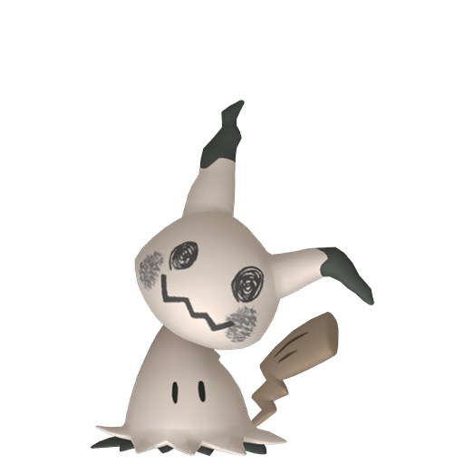
CH-05
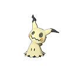
CH-06
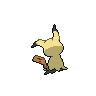
CH-07
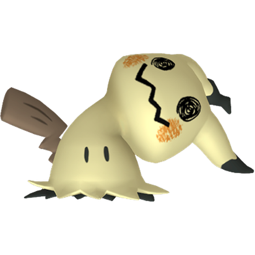
Guarda-roupa
Ele não parou no Pikachu
Quando a amizade chega ao máximo ele não dorme: continua costurando. São cinquenta panos até agora, todos feitos de memória, todos errados de um jeito diferente. Ele mostra a gaveta para quem fica.
A gaveta está fechada
Ir fazer carinho nele
Ele ainda não confia em você
Suba a amizade dele até 255 lá no topo da página — carinho com o cursor e comida — e a gaveta abre. Depois disso, cada carinho e cada petisco viram retalhos, e retalho é o que ele usa para costurar.
Amizade agora0 / 255
A gaveta está aberta.
Gaste um retalho e veja o que ele fez ontem à noite.
0
retalhoscarinho e comida na amizade máxima viram retalho
0 de 50 no varal
O varal
Comum Incomum Rara Ultra SecretaEstampa ilustrada
Todas as cartas dele,
de 2017 até agora
Trinta e quatro cartas em nove anos, incluindo quatro em que ele divide o espaço com Gengar e uma, de 2019, em que ele é do tipo Água — a Delta Species, com Wet Claw no lugar do soco. A coleção inteira, em ordem de lançamento.
34cartas no total
4eras, de Sol e Lua a Mega Evolution
2017ano da primeira, na era Sol e Lua
240PS na maior delas, a Gengar & Mimikyu-GX
Sun & Moon
15 cartas · 2017–2019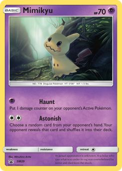
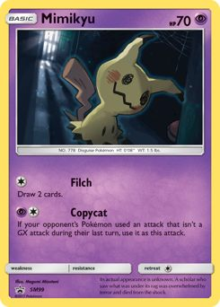
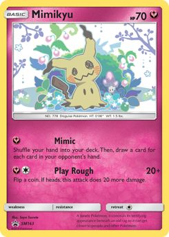
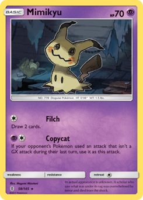
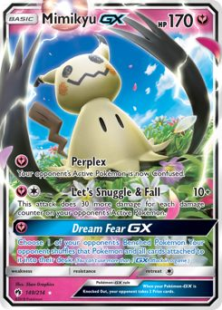
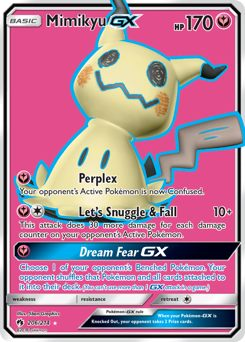
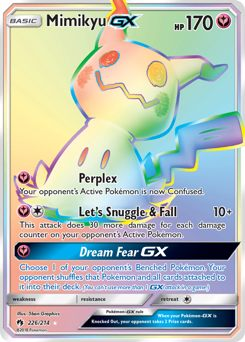
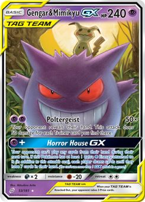
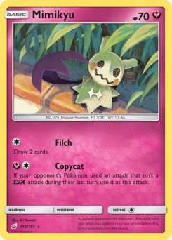
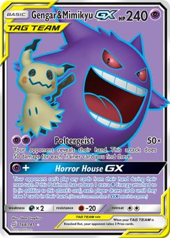
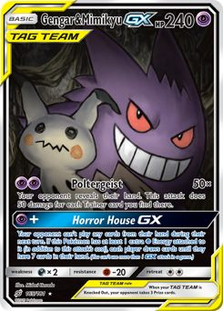
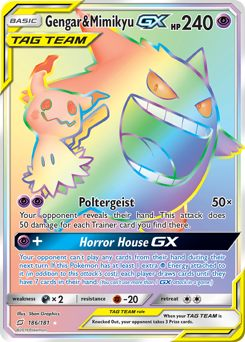
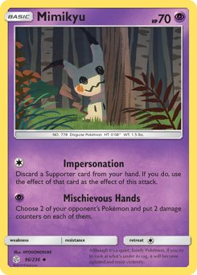
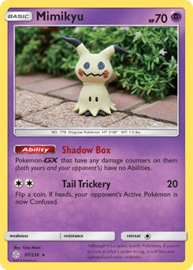
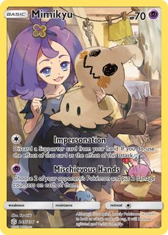
Sword & Shield
9 cartas · 2019–2022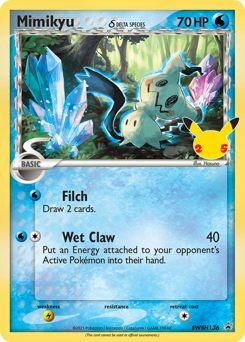
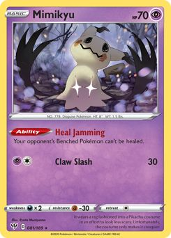
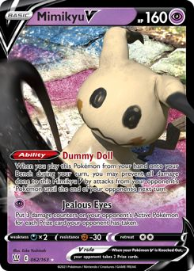
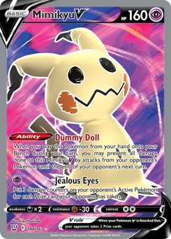
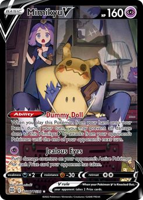
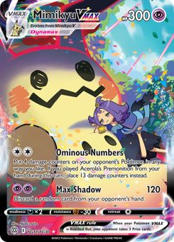
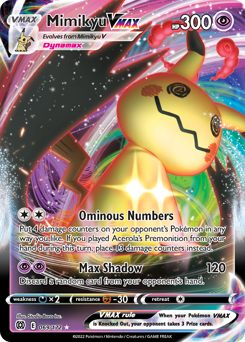
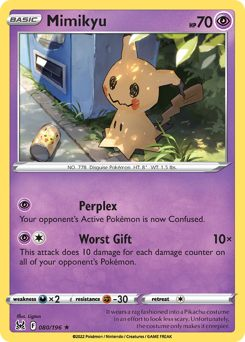
Scarlet & Violet
7 cartas · 2023–2025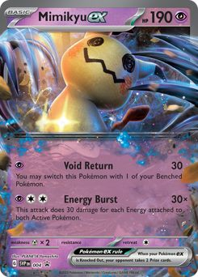
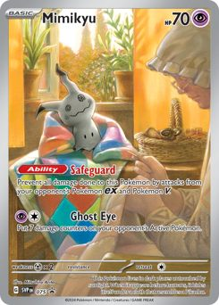
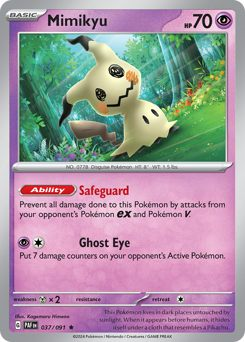
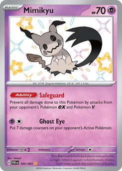
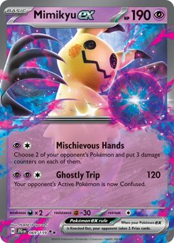
Mega Evolution
3 cartas · 2025–2026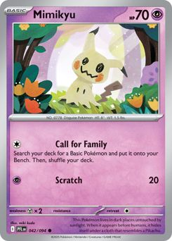
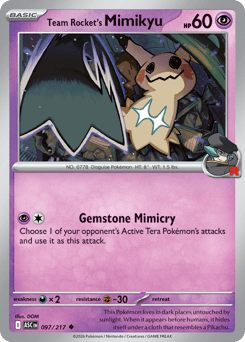
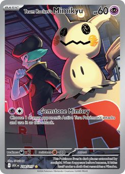
Dados e digitalizações via Pokémon TCG API. Cartas ordenadas por data de lançamento dentro de cada era.
Advertência do arquivo · manuseio restrito
Não levante o pano
Existe um único relato do que há embaixo. O autor conseguiu terminar o livro, e foi só isso que ele conseguiu terminar.
sério, não faça isso
Você levantou. A página não vai te mostrar — e não é escolha minha: em trinta anos de material oficial, o interior do disfarce nunca foi ilustrado uma vez sequer. Não existe imagem para colocar aqui.
O que existe é a nota final do estudioso de Alola, escrita depois de olhar e antes de morrer:
“não era um Pikachu”
Feche o pano. Devolva o graveto. Ele passou a noite inteira costurando isso.